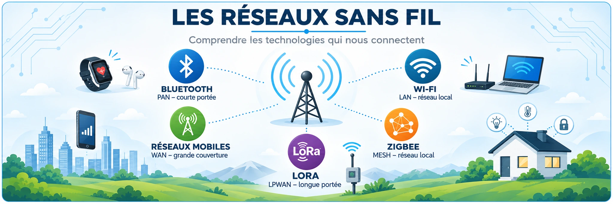

1. Les ondes radio
Une antenne émet un signal radio. Une autre le reçoit. Les murs, la distance et d'autres émissions peuvent affaiblir ce signal.
Une famille de technologies, plusieurs besoins
Un réseau sans fil transporte des données sans câble de liaison entre les appareils. Une antenne émet des ondes électromagnétiques et une autre les reçoit. L'information est codée pour être transmise par la radio.
Un casque, un PC portable, un capteur de température et un smartphone n'ont pas les mêmes besoins : leurs distances, leurs débits et leurs autonomies sont différents.
| Technologie | Besoin principal | Exemple |
|---|---|---|
| Bluetooth | Relier des objets proches | Casque, montre |
| Wi-Fi | Accéder à un réseau local rapide | PC, tablette |
| Zigbee | Faire communiquer de petits objets | Détecteur, ampoule |
| LoRaWAN | Transmettre de petites mesures à distance | Capteur agricole |
| 4G / 5G | Rester connecté en déplacement | Téléphone, routeur cellulaire |
Les quatre caractéristiques à connaître
| Notion | Unité | Ce qu'elle mesure |
|---|---|---|
| Fréquence | MHz, GHz | Oscillations du signal radio par seconde |
| Débit | kbit/s, Mbit/s, Gbit/s | Quantité de données transportées par seconde |
| Portée | m, km | Distance possible de communication |
| Latence | ms | Temps entre l'émission et la réception |
Une fréquence élevée n'implique pas à elle seule un débit supérieur. Les antennes, la largeur de canal, le protocole et l'environnement comptent également.
Les murs épais, le béton armé, l'éloignement et les interférences peuvent dégrader un signal. Un signal radio correct ne garantit pas que le réseau Internet fonctionne : il faut distinguer la liaison sans fil du service réseau.
Animation : propagation radio
Déplace le récepteur et ajoute un obstacle.
Je me teste
2. Bluetooth
Bluetooth relie des appareils proches : casques, claviers, souris, téléphones et capteurs.
Un PAN pour les équipements proches
Bluetooth appartient à la famille des réseaux personnels, appelés PAN. Il fonctionne dans la bande des 2,4 GHz et relie notamment téléphones, écouteurs, claviers, montres et petits capteurs.
L'appairage associe deux appareils. Leur compatibilité dépend aussi des profils pris en charge : une connexion Bluetooth ne signifie pas que toutes les fonctions audio ou de transfert sont disponibles.
Bluetooth Classic et Bluetooth Low Energy
| Variante | Débit radio brut indicatif | Usage |
|---|---|---|
| Bluetooth Classic BR/EDR | 1 à 3 Mbit/s selon mode | Audio traditionnel, accessoires |
| Bluetooth LE 1M | 1 Mbit/s | Capteurs et objets connectés |
| Bluetooth LE 2M | 2 Mbit/s | Échanges BLE plus rapides compatibles |
| Bluetooth LE Coded | 125 ou 500 kbit/s | Priorité à la robustesse ou à la portée |
Bluetooth Low Energy (BLE) permet de limiter la consommation pour certains objets sur pile. Bluetooth Classic reste important pour de nombreux usages audio. Les versions récentes ne suppriment pas immédiatement les anciens modes.
Repères historiques
| Version | Année | Apport marquant |
|---|---|---|
| 2.0 + EDR | 2004 | Débit amélioré en Bluetooth classique |
| 4.0 | 2010 | Introduction de Bluetooth Low Energy |
| 5.0 | 2016 | Modes LE 2M et LE Coded |
| 5.2 | 2020 | Fonctions permettant LE Audio |
| 5.4 | 2023 | Évolutions pour les objets et étiquettes électroniques |
| 6.0 | 2024 | Channel Sounding : mesure de distance compatible |
Correction importante : il n'existe pas une portée fixe de 10, 30 ou 50 mètres ni un nombre fixe de connexions pour chaque version. Ces valeurs dépendent du matériel, des antennes, des profils, de la consommation et des obstacles.
Je me teste
3. Wi-Fi
Le Wi-Fi relie un PC ou un téléphone à un réseau local via un point d'accès.
Le point d'accès, le SSID et le réseau local
Un point d'accès Wi-Fi relie les ordinateurs et smartphones au réseau local. Il est souvent intégré à la box Internet. Le SSID est le nom du réseau affiché dans la liste des connexions ; ce n'est ni l'adresse IP ni le mot de passe.
Un réseau Wi-Fi peut fonctionner même sans accès Internet, par exemple pour accéder à un serveur local. Pour dépanner, il faut donc distinguer Wi-Fi connecté, adresse IP obtenue et Internet accessible.
2,4, 5 et 6 GHz : trois bandes à comparer
| Bande | Avantage | Limite |
|---|---|---|
| 2,4 GHz | Couverture souvent favorable en intérieur | Bande fréquemment encombrée, peu de canaux non chevauchants |
| 5 GHz | Nombreux canaux et hauts débits possibles | Obstacles souvent plus pénalisants |
| 6 GHz | Bande supplémentaire pour appareils compatibles | Matériel adapté requis ; règles locales ; portée variable |
Les performances dépendent de la configuration, des murs, de la largeur des canaux et du nombre de clients. On ne peut pas garantir un débit ni une portée à partir de la seule fréquence.
L'évolution des normes Wi-Fi
| Génération | Norme | Bandes | Innovation principale |
|---|---|---|---|
| Wi-Fi 1 (nom rétrospectif) | 802.11b | 2,4 GHz | Jusqu'à 11 Mbit/s théoriques |
| Wi-Fi 2 (nom rétrospectif) | 802.11a | 5 GHz | Jusqu'à 54 Mbit/s théoriques |
| Wi-Fi 3 (nom rétrospectif) | 802.11g | 2,4 GHz | Jusqu'à 54 Mbit/s théoriques |
| Wi-Fi 4 | 802.11n | 2,4 / 5 GHz | MIMO, canaux améliorés |
| Wi-Fi 5 | 802.11ac | 5 GHz | Davantage de débit et de flux |
| Wi-Fi 6 | 802.11ax | 2,4 / 5 GHz | OFDMA, meilleure gestion des réseaux chargés |
| Wi-Fi 6E | 802.11ax | 2,4 / 5 / 6 GHz | Ajout du 6 GHz sur les appareils compatibles |
| Wi-Fi 7 | 802.11be | 2,4 / 5 / 6 GHz | Multi-Link Operation, canaux plus larges possibles |
Exemple : dans une salle où 25 appareils travaillent en même temps, ils partagent les ressources radio. Les performances peuvent diminuer même si chaque PC affiche un bon niveau de signal.
Correction du document d'origine : les colonnes proposant un nombre fixe d'utilisateurs ou une portée fixe par norme n'étaient pas fiables. Ces valeurs dépendent fortement des modèles et des installations.
Animation : fréquences Wi-Fi
Change la bande et le nombre de murs.
Je me teste
4. Zigbee
Zigbee connecte de petits appareils : ampoules, détecteurs et capteurs. Il consomme peu d'énergie.
Un réseau pour les petits objets connectés
Zigbee est très utilisé en domotique : détecteurs d'ouverture, capteurs de température, prises et ampoules. Dans la bande 2,4 GHz, son débit radio caractéristique est de 250 kbit/s, suffisant pour de petites commandes et mesures.
Zigbee n'est pas conçu pour regarder une vidéo. Un capteur sur pile peut dormir une grande partie du temps afin d'économiser son énergie.
Les trois rôles dans un réseau Zigbee
| Rôle | Fonction | Exemple |
|---|---|---|
| Coordinateur | Crée et administre le réseau | Hub domotique |
| Routeur | Relaie les messages et transmet les siens | Prise alimentée compatible |
| Équipement terminal | Échange ses propres données, peut dormir | Capteur sur pile |
Dans un réseau maillé (mesh), plusieurs routeurs peuvent offrir des chemins de remplacement. Cela peut augmenter la couverture d'un bâtiment. Mais tous les équipements alimentés ne sont pas nécessairement des routeurs : cela dépend de leur conception.
Si une prise qui faisait relais est retirée, des capteurs peuvent perdre le réseau. L'animation ci-dessous permet de reproduire une version simplifiée de cet incident.
Animation : maillage Zigbee
Éteins le routeur pour observer la rupture du trajet.
Le routeur A transmet les messages.
Ce réseau n'a qu'un routeur. Un vrai maillage peut proposer des trajets alternatifs.Je me teste
5. LoRa et LoRaWAN
LoRa est une modulation radio de longue portée et de faible débit. LoRaWAN organise la communication entre les objets, les passerelles et les serveurs.
LoRa : la radio ; LoRaWAN : le réseau
LoRa est une modulation radio adaptée aux petits messages envoyés sur une grande distance. LoRaWAN définit les règles de communication des objets, des passerelles et du serveur réseau.
En Europe, LoRaWAN utilise notamment les bandes autour de 868 MHz. Il peut couvrir plusieurs kilomètres lorsque les conditions sont favorables, mais ni cette portée ni la durée de vie des piles ne sont garanties.
Ce que permet une liaison LoRaWAN
| Critère | Caractéristique |
|---|---|
| Portée | De centaines de mètres à plusieurs kilomètres selon le relief et les antennes |
| Débit | Faible : petits messages, pas de vidéo |
| Énergie | Très faible possible si les envois sont espacés |
| Architecture | Étoile d'étoiles : appareils, passerelles, serveur |
| Exemples | Compteur, humidité agricole, niveau d'eau, alerte simple |
Un réseau LoRaWAN doit respecter les règles radio locales, notamment les limites de durée d'émission et de puissance. Les appareils ne peuvent pas transmettre en continu comme une caméra.
Mise en situation : un capteur de pluie envoie une mesure toutes les heures depuis une parcelle éloignée. La passerelle reçoit la radio et communique avec le serveur par un réseau IP. Si aucune passerelle n'est joignable, la donnée n'arrive pas au serveur.
Animation : transmettre une mesure LoRaWAN
Aucun message envoyé.
Je me teste
6. Réseaux mobiles
En 4G et 5G, les téléphones utilisent les antennes-relais d'un opérateur. En déplacement, ils peuvent changer de cellule.
Des réseaux cellulaires sur de grandes zones
Les réseaux mobiles sont déployés par des opérateurs grâce à des stations de base. Chaque station dessert une ou plusieurs cellules. Lorsqu'un téléphone se déplace, le réseau peut transférer la connexion vers une autre cellule : c'est le handover.
Les fréquences basses sont souvent adaptées à une large couverture. Les performances dépendent du relief, des bâtiments, de la largeur de bande, des antennes et du nombre d'utilisateurs.
Les générations de téléphonie
| Génération | Période | Principaux usages |
|---|---|---|
| 1G | Années 1980 | Voix analogique |
| 2G / GSM | Années 1990 | Voix numérique et SMS |
| GPRS / EDGE | Années 2000 | Premiers usages de données |
| 3G / UMTS | Années 2000 | Internet mobile |
| 4G / LTE | Années 2010 | Internet mobile haut débit |
| 5G / NR | Années 2020 | Capacité renforcée, nouveaux services selon déploiement |
Les débits annoncés pour la 4G et la 5G ne sont pas constants : une cellule chargée ou une couverture faible peut ralentir la connexion. Une bande de fréquence ne correspond pas à une distance fixe.
Attention : la 5G mobile n'est pas le Wi-Fi 5 GHz. Ce sont des technologies différentes. La 6G reste en développement et ne doit pas être présentée comme un réseau grand public déjà déployé.
Je me teste
7. Sécurité Wi-Fi
Les ondes radio peuvent dépasser les murs. Il faut contrôler l'accès au réseau et protéger les données échangées.
Pourquoi un réseau radio doit-il être protégé ?
Un signal Wi-Fi peut être capté à l'extérieur du bâtiment. Une personne non autorisée pourrait tenter de rejoindre le réseau. La protection repose notamment sur l'authentification (qui a le droit d'entrer ?) et le chiffrement (rendre les données illisibles sans les clés).
Même sur un Wi-Fi chiffré, il faut garder les systèmes à jour, protéger les comptes et utiliser HTTPS pour les sites concernés.
WEP, WPA, WPA2 et WPA3
| Système | Époque | État actuel | Décision |
|---|---|---|---|
| WEP | Fin des années 1990 | Cassé | À proscrire |
| WPA / TKIP | Début des années 2000 | Obsolète | À proscrire |
| WPA2-Personal / AES | Depuis les années 2000 | Encore utilisé | Possible avec longue phrase de passe unique |
| WPA3-Personal / SAE | Depuis 2018 | Protection améliorée | À privilégier avec matériel compatible |
| WPA2 / WPA3-Enterprise | Entreprises | Comptes individuels possibles avec 802.1X | À étudier pour réseaux professionnels |
Les anciens modes WEP et WPA/TKIP ne doivent plus être utilisés. Sur un réseau personnel moderne, on préfère WPA3 ; si les appareils ne sont pas compatibles, WPA2-AES reste une possibilité.
Pourquoi certains mots de passe résistent mieux
Une personne malveillante peut commencer par tester des mots de dictionnaire, prénoms, villes, années et variantes prévisibles. La longueur et le caractère réellement imprévisible du secret sont essentiels.
Une longue phrase de plusieurs mots choisis au hasard peut être plus robuste qu'un petit mot assorti d'un symbole et d'une année. Un gestionnaire de mots de passe peut générer des secrets uniques.
Football#2024 : analyser
Prévisible : mot connu et année.
JulienParis75 : analyser
Prévisible : informations facilement devinables.
K9!pL2@xT#7mQ : analyser
Plus difficile à deviner s'il est vraiment aléatoire, unique et conservé en sécurité.
rivière-cactus-boussole-nuage : analyser
Phrase longue intéressante si les mots ont été choisis indépendamment et au hasard.
Correction d'une approximation du TD
Le tableau du document papier indiquait qu'un message de 12 octets devenait systématiquement 20, 28 ou 35 octets selon WEP, WPA2 ou WPA3. Ce n'est pas une règle correcte : la taille des trames dépend des en-têtes, de la protection appliquée et des paramètres de la transmission.
Il faut surtout comprendre que le chiffrement protège les échanges radio, sans garantir à lui seul la sécurité de l'appareil ou de tous les services Internet.
Je me teste
8. Choisir la technologie
Un technicien compare la distance, le débit, la consommation, la mobilité et l'infrastructure disponible.
Comparer avant de décider
| Technologie | Portée relative | Débit relatif | Énergie | Usage |
|---|---|---|---|---|
| Bluetooth | Proximité | Faible à moyen | Souvent faible en BLE | Casques, périphériques, capteurs |
| Wi-Fi | Local | Élevé | Variable, souvent plus élevée | PC, réseau local, vidéo |
| Zigbee | Local, maillage possible | Faible | Faible | Domotique |
| LoRaWAN | Grande distance possible | Très faible | Très faible avec messages espacés | Capteurs éloignés |
| 4G / 5G | Couverture opérateur | Élevé selon couverture | Variable | Téléphonie et Internet mobile |
Méthode de choix d'un technicien
1. Identifier les données à transporter. 2. Mesurer la distance et les obstacles. 3. Évaluer l'autonomie et la fréquence des envois. 4. Vérifier l'infrastructure disponible. 5. Prévoir la sécurité et la maintenance.
Exemple : dans un entrepôt, des tablettes qui consultent des fichiers ont besoin d'un débit important, alors que des détecteurs de température sur pile n'envoient que de petites mesures. Il est logique d'envisager des technologies différentes.
Une connexion LoRaWAN ne devient pas automatiquement un accès Internet : elle nécessite des passerelles et un serveur réseau. De même, une connexion Bluetooth n'est pas un remplacement universel d'un réseau Wi-Fi.
Mission professionnelle : sélectionner une liaison
Je me teste
9. Diagnostic professionnel
Demande au support : un salarié voit le Wi-Fi « Entreprise » mais ne parvient plus à se connecter. Effectue des vérifications, trouve la cause, corrige, puis contrôle le résultat.